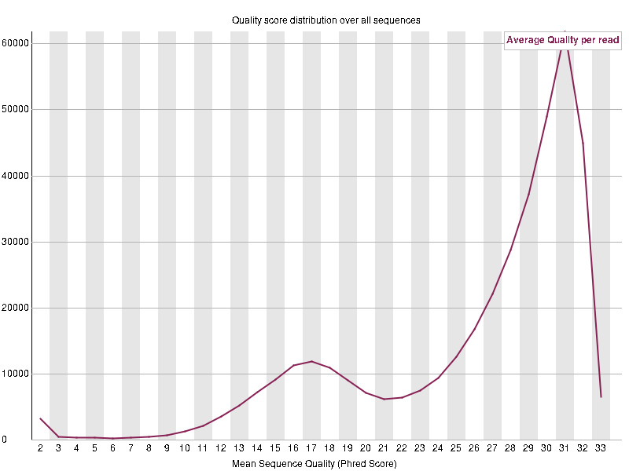

Quality Control of Raw Sequencing Data with FastQC
FastQC is a quality control tool for high-throughput sequencing data. It provides a quick, visual summary of your raw FASTQ files, helping you identify potential issues such as low-quality reads, adapter contamination, or biased base composition. FastQC generates easy-to-read HTML reports that summarize key quality metrics like per-base quality scores, GC content, and sequence duplication levels. Running FastQC before alignment or downstream analysis ensures your sequencing data are high-quality and suitable for accurate biological interpretation.
Here we provide a brief tutorial for analyzing your FASTQ files with FastQC. For a more in-depth explanation of FastQC please refer to the website and GitHub page.
To get instructions on how to install the FastQC package, see our page on Installing FastQC.
Run FastQC
FastQC conveniently has a built-in GUI in which to run your analysis. To open the GUI simply type into your command-line:
fastqcand follow the displayed instructions.
If you would prefer to analyze your data through the command-line, simply specify a list of files following the fastqc command:
fastqc --extract --outdir=<outdir> somefile.fastq someotherfile.fastq ...and replace <outdir> with the path to the directory you wish to have your output stored.
A Brief Tutorial on FASTQ Files
To understand the FastQC output, we must first understand what a FASTQ file is and how it is generated.
FASTQ files are the standard format for storing raw sequencing reads from next-generation sequencing instruments. Each read in a FASTQ file is represented by four lines:
@SEQ_ID
GATTTGGGGTTCAAAGCAGTATCGATCAAATAGTAAATCCATTTGTTCAACTCACAGTTT
+
!''*((((***+))%%%++)(%%%%).1***-+*''))**55CCF>>>>>>CCCCCCC65Line 1 – Read identifier (begins with @)
Line 2 – Nucleotide sequence
Line 3 – Separator line (usually just +)
Line 4 – Quality scores for each base (encoded as ASCII characters)
What Are Quality Scores?
Each entry in a FASTQ file contains not only the DNA or RNA sequence itself, but also a quality score for every base. These scores reflect the sequencing machine’s confidence in each base call — that is, how likely it is that a given nucleotide (A, T, G, or C) was correctly identified.
FASTQ quality scores are typically encoded using the Phred scale, a logarithmic transformation of the error probability:
\[Q = -10\times \log_{10}(P)\]
where \(P\) is the probability that a base call is incorrect. For example, a Phred score of 20 means there’s a 1% chance the base is wrong, while a score of 30 corresponds to a 0.1% error rate.
These scores are stored as ASCII characters in the FASTQ file, allowing both sequence and quality information to be represented compactly.
During quality control, tools like FastQC visualizes these scores across all reads helping identify low-quality regions that may need trimming or filtering before alignment and downstream analysis.
Understanding FASTQC Plots
Below are the plots that FastQC generates, each providing diagnostic insights into your sequencing data quality.
1. Per-Base Sequence Quality Over All Reads
This plot shows the distribution of quality scores for each base position across all reads. Typically, quality is highest near the 5′ end and drops toward the 3′ end of reads.

A sharp decline in quality may indicate sequencing problems or the need for trimming low-quality bases before alignment.

2. Per-Tile Sequence Quality Over All Reads
This graph visualizes quality variation across different tiles of the sequencing flow cell.
Each tile corresponds to a physical area on the sequencer’s imaging surface.
Systematic differences between tiles may point to instrument issues, uneven illumination, or problems during image analysis.

3. Quality Score Distribution Over All Sequences
This plot summarizes the overall distribution of mean quality scores per read.
Ideally, most reads should have consistently high average scores.

A broad or bimodal distribution suggests variable read quality, possibly due to uneven sequencing performance or mixed-quality samples.

4. Sequence Content Across All Bases
This plot shows the proportion of each nucleotide (A, T, G, and C) at every base position.
In random libraries, the lines should be roughly parallel.

Deviations early in the read may indicate biased priming, adapter contamination, or non-random base composition typical of certain assays (e.g., single-cell barcoding regions).
5. Per Sequence GC Content
This graph compares the GC content distribution of all reads to a theoretical normal distribution.

A shifted or multi-peaked curve may reflect contamination from other organisms, amplification bias, or targeted sequencing regions with atypical GC content.
6. Per Base N Content
This plot shows the percentage of ambiguous bases (“N”) called at each position in the read.

High or position-specific N content indicates uncertainty in base calling and may suggest low signal intensity or sequencing chemistry problems.

7. Sequence Length Distribution
This plot displays the distribution of read lengths in the dataset.
For most sequencing platforms, a single consistent read length is expected.

Variable lengths may indicate trimming, read merging, or incomplete read cycles.
8. Sequence Duplication Levels
This plot shows how many sequences are duplicated and how often.

High duplication levels can indicate PCR amplification bias or low library complexity.

However, in RNA-seq or scRNA-seq data, some duplication is expected due to highly expressed genes.
9. Overrepresented Sequences
This section lists any sequences that occur more frequently than expected by chance.
Overrepresentation may arise from adapter contamination, primer dimers, or abundant biological sequences such as rRNA.

Identifying and removing these sequences improves downstream analysis accuracy.
10. Adapter Content
This plot quantifies how much adapter sequence remains untrimmed at each read position.